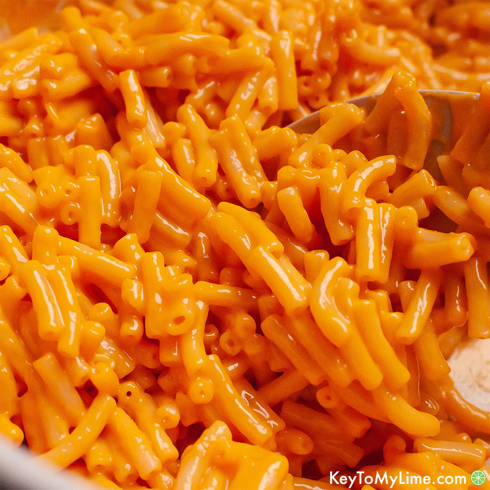

Mac and Cheese

This recipe is incredibly easy, and your kids would probably love to help you make it!
I let my littles help grate the cheese and measure the noodles.
For me, mac and cheese has to have a smooth and creamy cheese sauce, and I’ve had enough trial
and error in this department to understand that there are a few simple things you can do to
achieve that smooth sauce we all want in our macaroni!
Ingredients:
- Elbow macaroni
- Butter
- Flour
- Salt
- Ground black pepper
- Milk
- Half and Half
- Shredded Cheddar cheese: the higher quality aged-cheddar, the better!
Steps:
- Preheat the oven. Preheat to 325 degrees and lightly grease a square baking dish.
- Cook the macaroni. Slightly undercook your noodles (about 1 minute under al-dente).
Drain and set aside.
- Make the roux. Melt the butter in a medium saucepan over medium heat. Blend in the flour, salt, and
pepper. Cook for 2 minutes.
- Add milk and cheese. Stir in milk and half and half, slowly, stirring constantly. Remove from heat.
Add 1 cup shredded cheese to the sauce and stir just until melted. Add the cooked macaroni noodles and
toss to coat them in the sauce.
- Pour into baking dish. Pour half or the pasta mixture into the prepared baking dish. Sprinkle one half
cup cheese over the top. Pour remaining pasta over it and sprinkle with remaining cheese.
- Now enjoy!
Other Recipes:
Spaghetti and Meatballs
Steak
Home